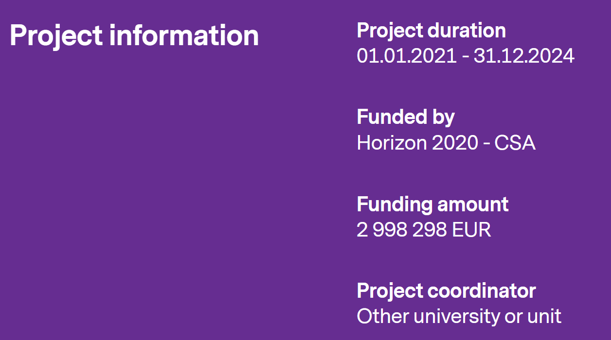

The EU 2020 RESET (Redesigning Equality and Scientific Excellence Together) aim is mainstreaming of intersectional gender equality and equity in universities. Project focuses on supporting research organisations to implement gender equality plans - call identifier: H2020-SwafS-2020-1. In the University of Oulu RESET cooperates with university’s gender equality and diversity committee (GEB).
Sciences Po is the evaluator of the project -> Maxime Forest & Hélène Périvier, OFCE Sciences Po

Abstract
Redesigning Equality and Scientific Excellence Together (RESET) will address the challenge of Gender Equality in Research Institutions in a diversity perspective, with the objective to design and implement a user-centered, impact-driven and inclusive vision of scientific excellence. RESET involves seven large multidisciplinary universities from all over Europe, all distinguished as excellent institutions (labels, clusters, programmes).
Combining an intersectional approach to gender equality with the collective intelligence fostered and harvested through the co-design of the Gender Equality Plans (GEPs), RESET will ensure that proposed changes are met with sustainability and ownership. Mainstreaming the co-design approach as an institutional practice for efficient gender equality policy-making and greater stakeholder engagement and support, will underpin high-quality and high-impact actions.
Supervised by Gender Equality Boards, GEPs will be co-designed by all stakeholders during the first year, and revised and upgraded during the fourth year, based on the assessment of their early implementation phase. GEP-related active co-design participation and training actions will operate at the individual, operational and institutional levels for structural change. RESET GEPs will be inspired and enhanced by tailored data analytics to provide insightful knowledge. Full support of top management and implementation of GEPs following the steps defined in EIGE’s GEAR tool will ensure the full integration of RESET activities into local excellence programmes.
RESET-project develops and tests Gender Impact Assessment (GIA) for new research projects, analyzing in application phase the research process and results in order to take into account sex, gender and intersectional differences and to ensure that the results are accurate, ethically sustainable and of a high standard. The staff of the University of Oulu is encouraged to create operating models that support gender equality and equality in the production of new information. Gender mainstreaming in research is increasingly required by research funding organisations (RFOs), and for example, when publishing research.
RESET will transform partner institutions into local living labs, contributing to innovation maximization in close-knit with local and national ecosystems (RPOs, HEIs, municipalities, industry, NGOs and citizens incentives). The RESET experience will strategically use this momentum to promote full replication in other HEIs/RPOs, thus supporting the achievement of ERA’s objective.